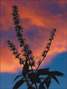
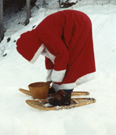

See the book at amazon.co.uk or amazon.com
Related Books

See Digital Multimedia at amazon.co.uk or amazon.com

See Web Design: A Complete Introduction at amazon.co.uk or amazon.com
The authors are not responsible for the content of any external sites linked to from digitalmediatools.org
All material on this site is ©2007–2010 MacAvon Media and may not be reproduced without permission.
Photoshop Exercise Files
The material offered for download in this section of the site is copyright. You may not publish any of this material in any form, reproduce it on public Web sites, or pass it off as your own. It is supplied for use in private and institutional study only.
The files supplied here are mainly Photoshop (PSD) files, and some are quite large. The photographs are not necessarily at their original resolution – in many cases we have downsampled to produce more manageable file sizes, where this does not interfere with the purpose of the exercise.
Resolution and Resampling
Download the photograph of cactuses [PSD:6.6MB]
Download the photograph and try changing the resolution without resampling, to see what effect this has on the display of the image. Change the resolution back to 72 dpi and experiment with reducing the size of this large image without changing the resolution again. (Refer to page 85.) Blow up the image on screen (View>Zoom In) to see the effects of the downsampling in detail. Assess how far you can downsample without a substantial loss of quality, but think about the size at which you might want to display the image.
Download the photograph of the lighthouse [JPEG:32kB]
![Download the photograph of the lighthouse [JPEG:32kB]](Files/Photoshop/Resolution/DMT3-4-lighthouse.jpg){kind=link}
Download this small JPEG file and experiment with enlarging it. Try each of the different interpolation methods and observe any differences. Try enlarging the image by several hundred percent, and then repeating this process again. What happens to the image and why? Can you see a sort of halo round the lighthouse and perhaps in other areas? What do you think might be the cause of this?
Making and Using Selections
You will often find it helpful to zoom in to the images when making precise selections. Make a habit of saving the selections as well as keeping an unchanged copy of the original file.
Download the photograph of a red flower [PSD:2.5MB]
Refer to pages 109–110 and experiment with using Select>Color Range… to see how much of the red flower you can select in this way without including the background. Invert the selection and delete everything other than the red flower, then fill the inverted selection with a background colour and observe areas of partial transparency in the flower.
Download the photograph of a fish under water [PSD:10.7MB]
Use the pen tool to select the fish in the way described on page 111. Invert the selection and delete the background; compare your result with Figure 4.32.
 Download the photograph of the Bishop's Palace in Wells [PSD:2.0MB]
Download the photograph of the Bishop's Palace in Wells [PSD:2.0MB]
Read the section on masks (pages 118–123). Experiment with making a feathered selection using the Refine Edge adjustments, and save the mask as an alpha channel or a layer mask.
 Download the photograph of a buddleia [PSD:1.1MB]
Use the magic wand to select all of the plant in the foreground and none of the sky behind. Save the selection.
Download the photograph of a butterfly [PSD:2.3MB]
Try to select only the butterfly using the magnetic lasso. Save the selection as an alpha channel and compare that channel with the black and white image shown here.
Adjustments and Retouching
Download the photograph of a sailing boat [PSD:455.6kB]
Using any selection tool of your choice, select just the sails (make sure you include the bits in shadow), and nothing else in the image. Save the selection as an alpha channel, and make sure that the selection is still loaded. Change the colour of the sails to a strong dark colour, such as red or purple. Now, using whatever means you find appropriate, change the colour cast of the whole image to give a distinctive but still naturalistic result, without altering the new colour of the sails. (Red sails in the sunset?) You may find it helpful to read the section on colour adjustments, starting on page 133.
Download the photograph of the red door [PSD:5.2MB]
Start by making as complete a selection as you can of the red colour in the door, without selecting any of the rest of the image. (You may need to use a combination of tools to do this.) Experiment with changing the door's colour by using the Hue/Saturation dialogue, as described and illustrated on pages 137–140.
Download the photograph of roses [PSD:4.2MB]
Read the section on blurring and sharpening, on pages 151–156. If you haven't got a suitable photograph of your own, download this one for the "Try This" exercise on page 156. See whether you can achieve a better result than the one shown on the right-hand side of Figure 4.73.
Download the photograph of a foghorn [PSD:4.6MB]
Experiment with using both the Spot Healing brush and the Clone Stamp tool to remove the unsightly rusty streaks on the wall. Make sure that you retain the wall's texture and lighting. See which tool does the better job. Refer to the section on retouching by hand, pages 142–146, and to Figure 4.64.
Effects and Filters
Download the tile pattern [Illustrator:167.9kB]
Download the photograph of the tiled path [PSD:1.7MB]
Download both the photograph and the tile pattern. Read the section on the Vanishing Point filter (pages 159–162) and look at the colour illustrations for Figures 4.78 to 4.80 provided on this site. Try to duplicate the effect that we created, shown in the left-hand image of Figure 4.78. If you are feeling ambitious, apply the tiled pattern to both of the paths (independently), but adjust its colour so that they are not identical.
Download the photograph of Cawdor Castle [PSD:10.7MB]
Experiment with the different filters in the Filter Gallery to produce several different dramatic graphic representations of the castle. you can try applying multiple filters but the building should remain recognizable. The results should be suitable for a tourist brochure with stylized illustrations.
We have deliberately not corrected the exposure in the original photograph (though it's corrected here on the site), so you could start by making adjustments to improve it.
Erasing and Fills
Certain types of erasing can be very demanding on your hands. Be careful to take frequent rests to avoid injury.
 Download the photograph of Pere Noel [PSD:7.3MB]
Using the Extract filter (see pages 116–118), try to extract Père Noel (complete with snowshoes and basket) from his background. Compare your result with the right-hand image shown in Figure 4.37. Now fill the background with a festive pattern. Why would it be difficult to extract Père Noel from his background by selection using the magic wand or Select>Color Range?
Download the photograph of crockery [PSD:4.6MB]
Using whatever methods you prefer, erase all the background of this picture, and the partially hidden cup in the top left, leaving just the two large cups on the right and the bowl full of packets of sugar. Fill the background with a plain colour that provides good contrast with the crockery.
Download the photograph of an old agricultural implement [PSD:4.5MB]
Download this photograph and save an unaltered version of it to return to.
(a) Practise using the background eraser to isolate this agricultural object from its background. Experiment with different tolerance settings, but try to get as clean a result as possible.
(b) Starting from a new copy of the original image, this time isolate both the object and its shadow. Is the background eraser the best tool for this job?
(c) Again, starting from a new copy, and using whatever tool or combination of tools you feel most appropriate, extract and save only the shadow of the agricultural object. See whether you can create a complete shadow by repairing the gaps left after the extraction.
Download the photograph of daffodils [PSD:4.9MB]
Erase all the background of this photograph, leaving only the daffodils (including their leaves and stems).
Download the photograph of a Shetland sheep [PSD:3.1MB]
Refer to the section on making patterns on pages 175–178. Experiment with generating patterns from the sheep's wool, or any other part of the image that looks interesting to you. Save the patterns you like for use as fills in other documents.
Animation
Read the section on animation on pages 179–188 before trying these exercises.
Download the photograph of a geranium flower [PSD:288kB]
Using only this small low-resolution image, make a simple animation. You can either try to duplicate the example described on pages 182–183 and shown on this site – but using different colours – or create an original animation of your own by making a sequence of adjustments to the image to make its appearance change over time. Save the result as an animated GIF and test it in a Web browser.
Download the photograph of a seascape [PSD:5.2MB]
Using only this seascape photograph, see whether you can create an animation similar to the one shown in Figure 4.98 and described on page 188.